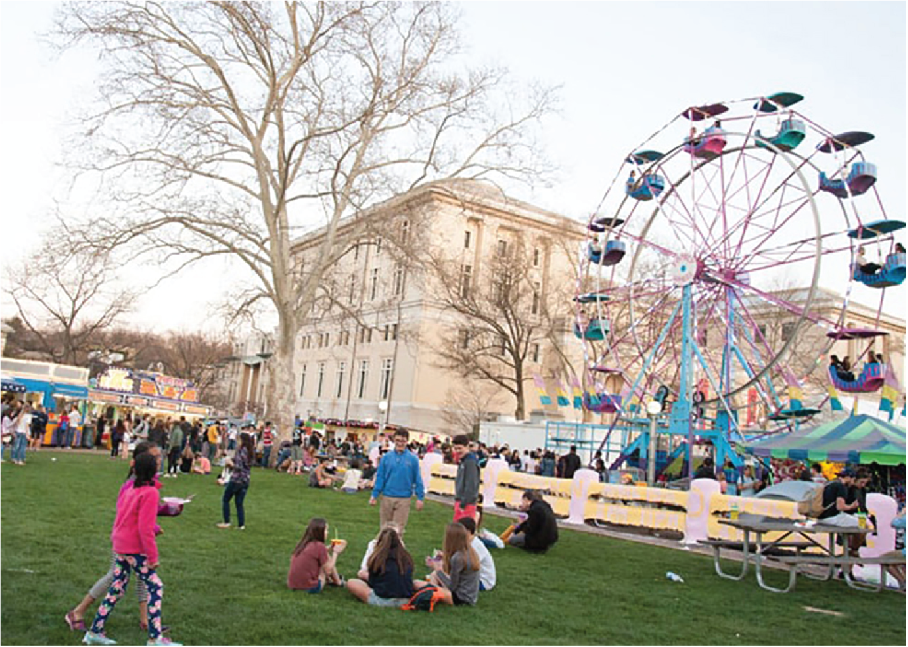

CMU Spring Carnival Comittee
Team
- Akshay Goradia
- Bruce Lin
- Rumby Wilson
Opportunity
The SCC relies on Binder – a Ruby on Rails web application – during Booth to manage tools borrowed by students. While Binder has many useful features like waitlist, watch shift, downtime, and notes. While Binder has incorporated many useful features that received positive feedback from last year’s booth coordinators, there are minor issues to be fixed to avoid odd functional behaviors and to further increase efficiency and user interactions.
Outcomes
Following our project vision, we built an enhanced Binder with notification feature, as well as a stable version without this feature as a fail-safe should any unpredictable incident happen over carnival. Both versions proved to be quality. Although the enhanced Binder was shut down during an emergency, our client indicated they were overall very happy with notification feature. For example, they spoke highly of the note scenario because they receive a text message whenever a note is posted to them, claiming this feature the most useful improvement. After shutting down notification, our client rolled back to our fail-safe version of Binder. They were happy with this version as well. Every year, SCC holds a post-carnival review to discuss its performance. Usually Binder errors is on the spot light because of functionality problems. However, Binder was only briefly mentioned this year because of its stable performance during carnival. As our client said, they had the least amount of problems with Binder this year.
Deliverables
Our project is a GitHub open source project. The source code can be found here: https://github.com/sc0v/binder-app. Note that the “Master” branch contains the deployed code during carnival. The “17/goat/main” branch was the primary development branch and the “hotfixes” branch was used by our client and us for emergency purposes during carnival.